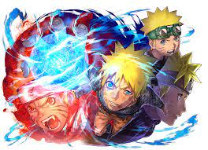
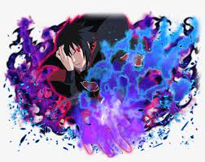
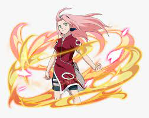
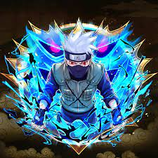

Naruto Revamp is fanmade of naruto blazing
Naruto Revamp
Be happy and play Naruto revamp
When will naruto revamp be avalible for all players?
Will sumons have rates for characters?
Does the game have set day on when will come out?
Will there be free multi summons?
Random dude
OMG Naruto blazing getting revived????I am so happy.
 Random dude number 2
Random dude number 2
Did i heard right?Naruto blazing getting revived? bro wtf thanks to developers to have time to create a fanmade naruto blazing.
What is Naruto blazing
Ultimate Ninja Blazing are turn-based, but you can use your turn to move around the board, switch characters, or use special attacks called Jutsu. When it is your turn, just drag your character to where you want them to go.
What is a Naruto revamp
Naruto revamp is a project that want to revive a Naruto blazing game and is currently in development
 Random dude number 3
Random dude number 3
何てことだはゲームをプレイするのを待つことができませんこれはとても誇大宣伝です
 Random dude number 4
Random dude number 4
This game is so nostalgic and cant wait to play again this game